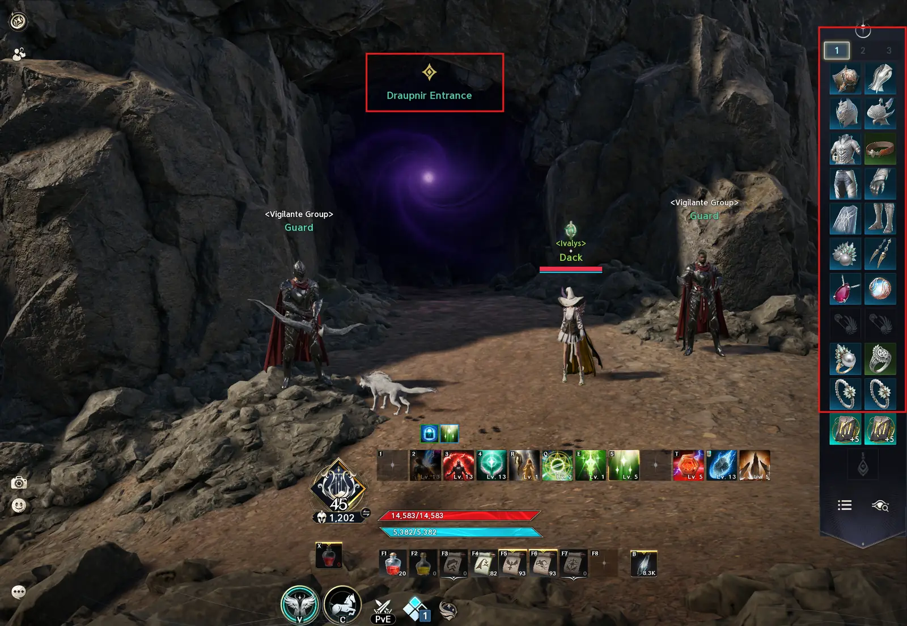
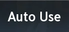
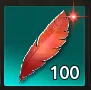
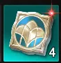
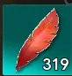

Leveling
Du niveau 1 à la fin de l'histoire : réglages, plumes, donjons scellés, Monolith, Krao Cave et Rifts.
Création et paramètres
Création de personnage
Commencez par créer votre personnage.
Si vous avez la possibilité de passer le tutoriel, faites-le, cela ne vous apportera rien de spécial.
Paramètres
Une fois que vous êtes sur votre personnage au niveau 1, commencez par effectuer tous les paramètres du jeu avant de débuter le leveling.
Ce paramètre permet de mettre vos consommables en Auto Use afin qu'ils ne s'activent que lorsque vous êtes en combat.
Sprint est la touche qui permet à votre personnage de sprinter lorsque vous n'êtes pas en combat.
C'est également la touche d'esquive lorsque vous êtes en combat.
C'est la touche qui vous permettra d'utiliser la macro en jeu.
Raccourcis permettant d'assigner les touches correspondant à votre barre de compétences.
Maximum View Distance (Far) : permet d'avoir un champ de vision (PoV) le plus large possible.
Camera Shake : désactivez cette option si vous ne souhaitez pas que votre écran tremble lorsque vous utilisez un sort.
Display Weapon Outside of Combat : permet d'afficher vos armes lorsque vous êtes en dehors d'un combat.
Display Equipped Title Effect on Nameplate : désactivez cette option si vous ne souhaitez pas voir les titres avec des effets spéciaux des autres joueurs, afin d'avoir moins de détails affichés à l'écran.
White Points Reduction
Permet de réduire l'intensité des couleurs blanches dans le jeu, ce qui le rend moins lumineux et moins agressif visuellement.
Premiers niveaux
Une fois que vous avez configuré vos paramètres, vous pouvez commencer les quêtes d'histoire.
Une fois que vous êtes niveau 4, vous avez accès à votre page de compétences.
Si vous connaissez un peu votre classe, vous pouvez placer vos compétences et créer vos macros afin d'avoir un DPS optimal dès le début de votre progression.
Une fois que cela est fait, continuez les quêtes d'histoire.
Une fois que vous avez terminé la quête qui débloque les ailes, vous verrez apparaître dans votre journal de quêtes une nouvelle barre rouge avec un pourcentage à l'intérieur.
Il faudra que cette jauge atteigne les 100 % à un certain moment des quêtes d'histoire.
Comment augmenter votre pourcentage ?
Pour augmenter votre pourcentage, vous devez :
- Faire les quêtes vertes (quêtes annexes)
- Effectuer les donjons scellés
- Continuer les quêtes principales
Une quête principale, aux alentours du niveau 7, vous récompensera avec des Shards. Celles-ci vous accorderont un bonus de dégâts sur les sorts que vous utilisez.
À garder activé en permanence, car cela augmente votre DPS.

Vous allez recevoir des parchemins blancs. Ce sont des consommables et, comme les Shards, il faut les activer et les garder activés en permanence grâce à l'Auto Use.
Comment auto use
Grâce aux paramètres configurés au préalable, cela s'activera uniquement lorsque vous serez en combat.
Niveau 9
Une quête vous expliquera comment améliorer le niveau de votre équipement.
Ne faites pas évoluer votre équipement pendant le leveling.
Vous n'en avez pas besoin et, surtout, cela représente une perte de Kinahs.
Exception : les amulettes et les ceintures, mais nous y reviendrons plus tard dans ce guide.
NE FAITE L'EVEMENT SHUGO AVANT LE LVL 45
Plumes et exploration
Continuez vos quêtes principales. Une fois que vous aurez atteint le niveau 10, cela signifiera que vous avez terminé la zone de tutoriel du jeu.
Vous voilà désormais dans la zone principale de votre aventure.
Continuez vos quêtes jusqu'à atteindre la quête qui vous permettra d'obtenir votre premier pet.
Une fois cette quête validée, vous aurez accès à votre premier pet. Vous pourrez l'utiliser comme monture afin de vous déplacer plus rapidement.
Maintenant, vous n'allez pas continuer la quête principale tout de suite.
On va commencer par ramasser toutes les plumes de la ville dans laquelle vous vous trouvez.
Vous pouvez voir où se trouvent les plumes via la mini-carte.
Pour récolter les plumes, il suffit d'aller devant celles-ci et de les récolter avec votre touche d'interaction.

Une fois toutes les plumes récoltées, voici à quoi devrait ressembler votre carte.
Il y a une plume qu'il n'est pas possible de ramasser, car elle est liée à une quête.
Récolter une plume sur la carte vous donnera en réalité 4 plumes dans votre inventaire. Cela signifie que si vous avez bien récupéré toutes les plumes, vous devriez en avoir 100 dans votre inventaire.
En effet, il y a 25 plumes à récolter ici.
25 × 4 = 100 plumes
Dès que ceci est fait, continuez votre quête d'histoire.
Vos quêtes principales vont vous amener dans une nouvelle zone. Qui dit nouvelle zone dit aussi nouvelles plumes à récolter.
Mais maintenant, comme vous le remarquerez, il y a aussi des points d'interrogation sur la carte en plus des plumes. Qu'est-ce que c'est ?
Les points d'interrogation correspondent à des instances à faire en solo. Vous avez soit :
- Un donjon scellé = qui vous donne des Enchant Stones, des Daevanions, des Kinahs, de l'expérience et des succès
- Un Stronghold*= qui vous donne les mêmes récompenses, ainsi que de quoi améliorer votre ceinture
Ces instances augmenteront les statistiques de votre personnage, ce qui rendra le leveling moins pénible que si vous ne les faites pas.
Répertorions donc le contenu disponible actuellement. Nous avons :
- Les quêtes principales
- Les plumes à récolter
- Les points d'interrogation à faire
Et voici dans quel ordre je vous conseille de faire ces contenus :
Priorité : les points d'interrogation, les plumes et les quêtes vertes (introduction des quêtes vertes).
Quand il ne reste plus que cela à faire : les quêtes principales.
Vous avez ci-dessous un exemple du chemin que je vais prendre à ce moment de mon expérience.
Pourquoi faire tout cela pendant votre leveling ? Tout simplement parce que tout ce contenu vous donne des récompenses qui augmentent définitivement la puissance de votre personnage. Autant le faire lorsque vous passez devant, cela augmentera la puissance de votre personnage, rendra votre leveling plus agréable et, en plus, il est nécessaire d'obtenir ces statistiques, même pour le endgame.
Ces statistiques proviennent des :
- Plumes
- Donjons scellés
- Strongholds
Lorsque vous arriverez à cette quête principale, votre première quête verte sera disponible.
Les quêtes vertes sont les quêtes annexes du jeu. Il faut les faire en priorité dès que vous en avez.
Les récompenses des quêtes annexes sont :
- Augmentation de l'espace de l'inventaire
- Points de Daevanion
- Kinahs
- EXP
Lorsque vous arrivez à cette quête, je vous montre à quoi ressemble ma carte afin que vous ayez un exemple.
Comme vous pouvez le voir, tous les points d'interrogation sont faits, ainsi que toutes les plumes de ma région.
Je peux donc faire la quête verte et continuer la quête principale.
Priorité à suivre
1. Donjons scellés 2. Quêtes vertes 3. Plumes 4. Quêtes principales
En continuant vos quêtes principales, aux alentours du niveau 13-14, vous aurez une quête qui débloquera les Daevanions ainsi que votre ceinture.
Commencez par équiper votre ceinture.
Daevanions et ceinture
Les Daevanions augmentent vos statistiques ainsi que vos passifs et vos compétences.
- Les nœuds gris correspondent aux statistiques
- Les nœuds bleus correspondent aux niveaux de compétences
- Les nœuds verts correspondent aux niveaux de passifs
- Les nœuds orange correspondent à des statistiques plus puissantes
Pour le leveling, je vous conseille d'améliorer vos compétences en premier. Prenez celles que vous utilisez le plus, donc en priorité vos 2 Auto Attacks.
Une fois que vous avez amélioré vos compétences les plus importantes, allez chercher les nœuds orange.

Voici à quoi ressemblent les points de Daevanion. Ils sont obtenus grâce aux quêtes d'histoire, à certaines quêtes vertes (plus tard dans le jeu) ainsi qu'aux donjons scellés.
Voilà pourquoi les donjons scellés sont importants à faire : ils vous donnent de gros bonus de statistiques.
Le guide complet est dans l'onglet Daevanion.

À un moment de vos quêtes principales, vous serez de nouveau téléporté dans votre ville de départ.
À ce moment-là, vous aurez la quête qui vous expliquera comment fonctionnent les plumes et vous pourrez donc consommer toutes les plumes que vous avez récoltées.
Si vous avez bien suivi ce guide, vous devriez être comme moi, avec environ 320 plumes. Voici à quoi ressemble ma carte.
Monolith et retour en ville
Faites ensuite votre quête et rendez-vous à votre Altar. Vous pourrez alors augmenter le niveau de votre Monolith.
Le niveau maximum du Monolith est de 30. Voici ce que vous gagnez en augmentant son niveau :
- Points de compétence
- Parchemins d'amélioration pour l'amulette
- Skins
- Statistiques (par exemple, au niveau 30, vous obtenez 8 % de vitesse d'attaque supplémentaire)
Ce qui est bien en le faisant pendant le leveling, c'est que vous n'aurez pas à le faire plus tard.
Votre personnage gagne en statistiques. Vous êtes obligé de le faire à un moment, car c'est le seul moyen d'améliorer votre amulette. Pendant votre leveling, toutes vos compétences seront toujours au niveau maximum.
Une fois que c'est fait sur votre premier personnage, vous pouvez synchroniser les plumes sur tous les autres personnages.
Voici à quoi ressemblent les points de compétence.
- Ils sont obtenus lors d'un passage de niveau (Level Up)
- ou en augmentant le niveau de votre Monolith
Vous n'avez qu'à cliquer dessus pour les consommer et gagner des points de compétence.
Avant de continuer votre aventure, nous allons profiter d'être en ville pour aller voir le marchand.
Si vous avez fait tout le contenu en arrivant à la fin de la quête des plumes, vous devriez avoir environ 300k Kinahs. Nous allons en utiliser une partie pour reprendre des consommables pour notre aventure.
Vous pouvez voir sur cette capture d'écran ce que je vais prendre.
Pour les personnes abonnées au jeu, vous avez accès à ce marchand directement depuis la boutique.
Raccourci par défaut : H, accessible à tout moment et partout.
Nous allons équiper nos premiers titres afin de gagner un peu en puissance.
Attaque : Guardian of Altgard
Défense : Peu importe, vous n'avez pas encore de titre vraiment intéressant pour le moment.
Utilitaire : Hatching Eggs
Ascension, Stigmas et Krao Cave
Maintenant que vous avez pu faire tout ça, vous pouvez continuer votre aventure.
Faites attention, avant de passer à la suite, vous avez 6 quêtes vertes à faire.
Une fois cela fait, reprenez tranquillement votre aventure tout en continuant de faire 100 % du contenu disponible.
Le prochain point important est la quête d'ascension.
Vous aurez accès à une quête rouge. Pour pouvoir la faire, vous devez être à 100 % sur votre barre d'ascension.
Si vous avez bien suivi ce guide, vous devriez très facilement être à 100 %.
Entrez dans la zone et faites votre quête normalement.
Quand vous arrivez devant cette quête, vous devrez faire votre premier donjon, mais avant de le faire, attention, vous avez 2 nouvelles quêtes vertes à faire.
Depuis que vous avez fait votre quête d'ascension, vous avez débloqué vos Stigmas, qui sont des compétences supplémentaires. Pour les améliorer, il vous faudra des Stigma Shards.
Un guide dédié aux Stigmas viendra compléter cette Bible.
Choisissez en priorité les Stigmas qui vous donnent des buffs, puis regardez ceux que vous souhaitez utiliser pour votre leveling.
Il reste 2 choses à faire avant d'aller faire le donjon Krao Cave.
Premièrement : allez dans le menu pour augmenter le niveau de votre amulette à +10.
Ensuite, retirez l'amulette de votre équipement, cliquez dessus et allez dans le menu de morph (l'icône en forme de losange).
Vous pourrez alors transformer votre amulette verte +10 en une amulette bleue +0.
Pour augmenter le rang de votre amulette, elle doit d'abord être en +10, puis vous devez la morph afin d'augmenter son rang.
Pour obtenir les parchemins d'amélioration de l'amulette, il faut récolter les plumes et augmenter le niveau de votre Monolith.
Deuxième chose à faire :
Retournez à votre Monolith. Si vous avez bien récupéré toutes les plumes disponibles dans l'open world jusqu'à Krao Cave, vous devriez en avoir suffisamment pour monter votre Monolith au niveau 30, qui est le niveau maximum.
Grâce à cela (Monolith niveau 30), vous débloquez un titre légendaire de défense que vous pouvez équiper.
Krao Cave
Allez dans le menu d'expédition, puis sélectionnez Krao Cave.
Vous pouvez faire cette instance seul ou en groupe. De mon côté, je ferai les donjons en solo, car je serai plus rapide et je connais déjà l'instance.
Si vous souhaitez la faire en groupe, vous pouvez le faire en utilisant les options suivantes :
- Create Room
- Private
- Quick Join
Profitez de votre premier donjon !
N'ouvrez pas le coffre à la fin du donjon. Cela ne vous sert à rien, à part vous faire perdre de l'énergie.
Niveau 45 et fin de l'histoire
À partir de maintenant, vous avez tout ce qu'il vous faut pour faire votre leveling jusqu'au niveau 45.
Suivez tout simplement les mêmes priorités qu'auparavant :
- Donjons scellés
- Quêtes vertes
- Quêtes principales
Dès que vous passez niveau 45, vous aurez plusieurs points rouges. Vous pouvez explorer les différents menus afin de les enlever.
Une fois arrivé ici, ne faites plus que les quêtes d'histoire et les donjons scellés.
Les quêtes vertes seront complétées après la fin de la quête principale.
Ce n'est pas parce que vous êtes niveau 45 que votre leveling est terminé.
Le seul contenu que vous pouvez faire, et que je vous conseille même de faire dès que possible une fois niveau 45, c'est les Shugos.
- C'est disponible une fois par heure, à chaque heure pile :
- 12 h 00 / 13 h 00 / 14 h 00, etc
Cela vous donnera des récompenses importantes pour l'évolution de votre personnage.
À un moment de vos quêtes principales, vous devrez faire le donjon Daupnir.
Ce donjon doit être fait en groupe. Il n'est pas adapté au nombre de joueurs présents à l'intérieur.
Comme précédemment, n'ouvrez pas le coffre à la fin.
Une fois arrivé ici, vous avez terminé toutes les quêtes principales disponibles.
Une fois arrivé à ce moment de votre aventure, une multitude de quêtes vertes seront disponibles. Vous devez toutes les faire.
Cela vous donnera :
- De l'équipement
- Des points de Daevanion
- Des titres
- Des Kinahs
Si vous souhaitez optimiser un peu votre temps, commencez par prendre les quêtes Spacetime Rift.
Ce sont des quêtes qui vous demanderont d'aller dans la faction adverse afin d'y accomplir certains objectifs.
Comme les Rifts ne sont disponibles que toutes les 3 heures, pendant 1 heure, cela vous permettra de gagner un peu de temps.
Les Rifts
C'est un événement qui se produit toutes les 3 heures, auquel vous pouvez participer pendant 1 heure avant d'en être expulsé.
Cela vous permet d'aller dans la faction adverse afin d'y faire du PvP ou de remplir certains objectifs. Ici, nous allons uniquement parler du leveling.
Comment entrer dans une Rift ?
Toutes les 3 heures, un message s'affichera au milieu de votre écran pour vous l'indiquer.
Un message au milieu de votre écran vous informera également lorsqu'une Rift commence.
Ouvrez votre carte et cherchez une icône ronde, légèrement dentée. Celle-ci vous indique où se trouve le portail pour entrer dans une Rift.
Vous avez une quête verte qui vous demande de prendre une Rift, avec un emplacement indiqué. Attention, la Rift peut apparaître dans un certain périmètre autour de cet emplacement. Soyez donc attentif.
Voici à quoi ressemble un portail pour entrer dans une Rift.
Approchez-vous du portail et utilisez votre touche d'interaction.
Pour entrer dans une Rift, au moment où elle s'ouvre, vous n'avez que 10 minutes pour y entrer. Passé ce délai, elle disparaît.
Un maximum de 400 personnes peuvent entrer dans une Rift par serveur.
Quand vous entrez dans la Rift, vous vous retrouvez dans la zone de la faction adverse.
Vous devrez découvrir toute la carte, comme lorsque vous avez commencé votre aventure.
Que faire en Rift ?
Vous devrez faire vos quêtes vertes de Spacetime Rift.
Tous les donjons scellés et les Strongholds que vous avez faits au sein de votre faction devront être refaits en Rift, dans la faction adverse.
Vous devrez forcément revenir en Rift, car vous ne pourrez pas tout faire en une seule fois. Faites donc attention à rester en vie plutôt que de vouloir aller trop vite.
Les zones dédiées à la faction adverse sont gardées par des gardes.
Si vous vous en approchez, les gardes vous attaqueront.
Les gardes vous one-shot, donc ne passez pas par les villes, les camps ni les zones de téléportation.
Quand vous voyez cette icône sur votre mini-carte, n'allez pas dans cette direction. Cela indique un Kisk adverse et donc, forcément, la présence de gardes.
Fin du leveling
Si vous avez fait tout ce que ce guide vous a conseillé, vous avez terminé votre leveling.
Afin de vous montrer à quoi ressemble un personnage ayant terminé son leveling, je vous invite à regarder ce qui suit.
Le Gear Score approximatif : entre 1 450 et 1 500.
Voici l'équipement que vous êtes censé avoir à la fin du leveling.
Ariel
C'est le Daevanion qui donne des statistiques PvE.
En ayant fait toutes vos quêtes vertes du niveau 45, vous devriez en avoir 10.
503 points de Daevanion bleu (j'en ai 507, mais cela vient d'un contenu d'une saison future).
S'il vous en manque, c'est qu'il vous manque soit des quêtes vertes, soit des donjons scellés.
Les Skills et les passifs
- Si vous avez bien monté vos Daevanions pour vos Skills et vos passifs, vous pouvez avoir tous vos Skills niveau 14
- (niveau 10 maximum + 4 niveaux grâce aux Daevanions)
et vos 5 meilleurs passifs niveau 14, ainsi qu'1 passif niveau 12.
Merci à tous d'avoir suivi ce guide sur le leveling.
J'espère que cela a pu vous aider tout au long de votre leveling.